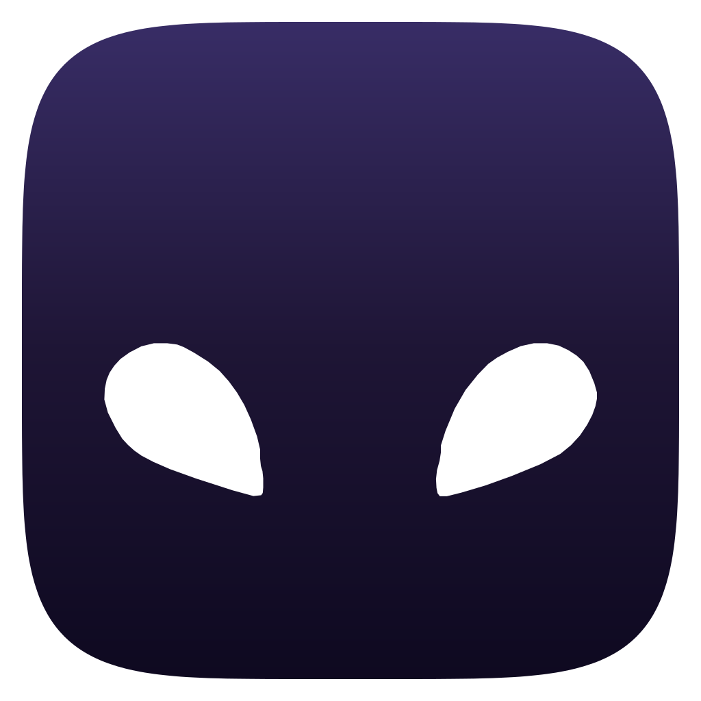
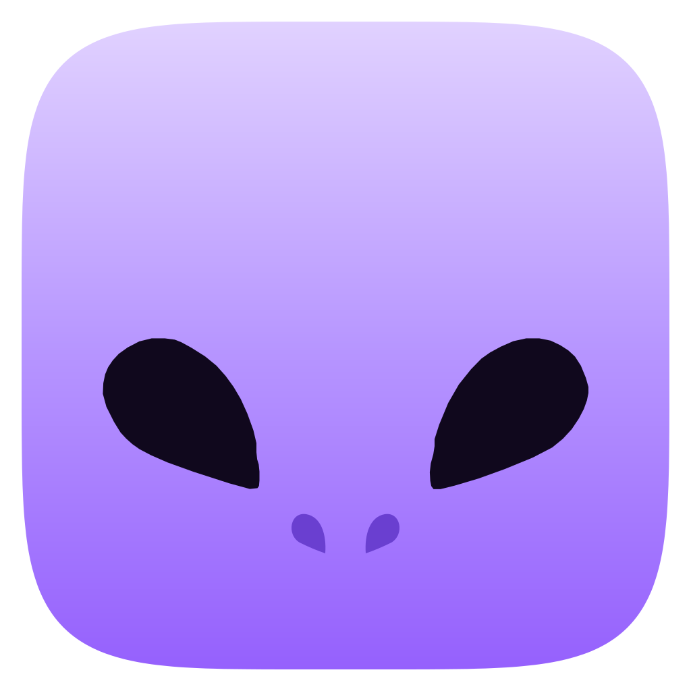

Do ícone atual ao focinho, tom sobre tom, sem boca, só as narinas
 Atual (claro)
Atual (claro)
cabeça sobre o fundo→
Só os olhos (claro)
3 formas→Com focinho (claro)
5 formas: + 2 narinas em gota Atual (escuro)
Atual (escuro)
cabeça sobre o fundo→Só os olhos (escuro)
3 formas→
Com focinho (escuro)
5 formas: + 2 narinas em gotaLegibilidade em 144, 96, 72 e 48 px
Só olhos claro
Focinho claro
Só olhos escuro
Focinho escuro
Adaptive icon com focinho (tracejado = área segura de 66dp)